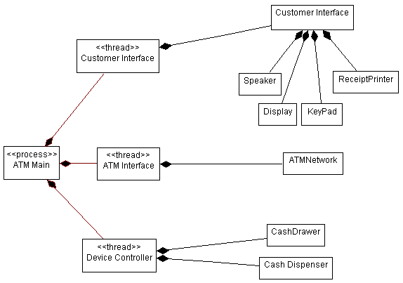

Roles and Activities >
Developer Role Set >
Roles and Activities >
Developer Role Set >
 Software Architect >
Software Architect >
 Describe the Run-time Architecture
Describe the Run-time Architecture
Roles and Activities >
Developer Role Set >
Software Architect >
Describe the Run-time Architecture
Activity:
| ||||||||||||||||||||||||||||
Purpose
|
|
| Steps | |
| Input Artifacts: | Resulting Artifacts: |
| Role: Software Architect | |
| Guidelines: | |
| Concepts: | |
| Checkpoints: | |
| Tool Mentor: | |
| Workflow Details: |
Active objects (that is, instances of active classes) are used to represent concurrent threads of execution in the system: notionally, each active object has its own thread of control, and, conventionally, is the root of an execution stack frame. The mapping of active objects to actual operating system threads or processes may vary according to responsiveness requirements, and will be influenced by considerations of context switching overhead. For example, it is possible for a number of active objects, in combination with a simple scheduler, to share a single operating system thread, thereby giving the appearance of running concurrently. However, if any of the active objects exhibits blocking behavior, for example, by performing synchronous input-output, then other active objects in the group will be unable to respond to events that occur while the operating system thread is blocked.
At the other extreme, giving each active object its own operating system thread should result in greater responsiveness, provided the processing resources are not adversely impacted by the extra context switching overhead.
In real-time systems, Artifact: Capsules are the recommended way of modeling concurrency; like active classes, each capsule has its own notional thread of control, but capsules have additional encapsulation and compositional semantics to make modeling of complex real-time problems more tractable.
This activity defines a process architecture for the system in terms of active classes and their instances and the relationship of these to operating system threads and processes.
Equally, for real-time systems, the process architecture will be defined in terms of capsules and an associated mapping of these to operating system processes and threads.
Early in the Elaboration phase this architecture will be quite preliminary, but by late Elaboration the processes and threads should be well-defined.
The results of this activity are captured in the design model - in particular, in the process view (see Concepts: Process View).
Purpose
|
During Activity: Identify Design Elements, concurrency requirements driven primarily by naturally occurring demands for concurrency in the problem domain were considered.
The result of this was a set of active classes, representing logical threads of control in the system.
In real-time systems, these active classes are represented by Artifact: Capsules.
In this step, we consider other sources of concurrency requirements - those imposed by the non-functional requirements of the system.
Concurrency requirements are driven by:
This reasoning applies equally to capsules, when used in the design of real-time systems.
As with many architectural problems, these requirements may be somewhat mutually exclusive. It is not uncommon to have, at least initially, conflicting requirements. Ranking requirements in terms of importance will help resolve the conflict.
Purpose
|
| Concepts: Concurrency |
The simplest approach is to allocate all active objects to a common thread or process and use a simple active object scheduler, as this minimizes context-switching overhead. However, in some cases, it may be necessary to distribute the active objects across one or more threads or processes.
This will almost certainly be the case for most real-time systems, where the capsules used to represent the logical threads in some cases have to meet hard scheduling requirements.
If an active object sharing an operating system thread with other active objects makes a synchronous call to some other process or thread, and this call blocks the invoking object's shared operating system thread, then this will automatically suspend all other active objects located in the invoking process. Now, this does not have to be the case: a call that is synchronous from the point of view of the active object, may be handled asynchronously from the point of view of the simple scheduler that controls the group of active objects - the scheduler suspends the active object making the call (awaiting the completion of its synchronous call) and then schedules other active objects to run.
When the original 'synchronous' operation completes, the invoking active object can be resumed. However, this approach may not always be possible, because it may not be feasible for the scheduler to be designed to intercept all synchronous calls before they block. Note that a synchronous invocation between active objects using the same operating system process or thread can, for generality, be handled by the scheduler in this way - and is equivalent in effect to a procedure call from the point of view of the invoking active object.
This leads us to the conclusion that active objects should be grouped into processes or threads based on their need to run concurrently with synchronous invocations that block the thread. That is, the only time an active object should be packaged in the same process or a thread with another object that uses synchronous invocations that block the thread, is if it does not need to execute concurrently with that object, and can tolerate being prevented from executing while the other object is blocked. In the extreme case, when responsiveness is critical, this can lead to the need for a separate thread or process for each active object.
For real-time systems, the message-based interfaces of capsules mean that it is simpler to conceive a scheduler that ensures, at least for capsule-to-capsule communications, that the supporting operating system threads are never blocked, even when a capsule communicates synchronously with another capsule. However, it is still possible for a capsule to issue a request directly to the operating system, for example, for a synchronous timed wait, that would block the thread. Conventions have to be established, for lower level services invoked by capsules, that avoid this behavior, if capsules are to share a common thread (and use a simple scheduler to simulate concurrency).
As a general rule, in the above situations it is better to use lightweight threads instead of full-fledged processes since that involves less overhead. However, we may still want to take advantage of some of the special characteristics of processes in certain special cases. Since threads share the same address space, they are inherently more risky than processes. If the possibility of accidental overwrites is a concern, then processes are preferred. Furthermore, since processes represent independent units of recovery in most operating systems, it may be useful to allocate active objects to processes based on their need to recover independently of each other. That is, all active objects that need to be recovered as a unit might be packaged together in the same process.
For each separate flow of control needed by the system, create a process or a thread (lightweight process). A thread should be used in cases where there is a need for nested flow of control (i.e. if, within a process, there is a need for independent flow of control at the sub-task level).
For example, we can say (not necessarily in order of importance) that separate threads of control may be needed to:
Example
In the Automated Teller Machine, asynchronous events must be handled coming from three different sources: the user of the system, the ATM devices (in the case of a jam in the cash dispenser, for example), or the ATM Network (in the case of a shutdown directive from the network). To handle these asynchronous events, we can define three separate threads of execution within the ATM itself, as shown below using active classes in UML.

Processes and Threads within the ATM
Purpose
|
Each process or thread of control must be created and destroyed. In a single-process architecture, process creation occurs when the application is started and process destruction occurs when the application ends. In multi-process architectures, new processes (or threads) are typically spawned or forked from the initial process created by the operating system when the application is started. These processes must be explicitly destroyed as well.
The sequence of events leading up to process creation and destruction must be determined and documented, as well as the mechanism for creation and deletion.
Example
In the Automated Teller Machine, one main process is started which is responsible for coordinating the behavior of the entire system. It in turn spawns a number of subordinate threads of control to monitor various parts of the system: the devices in the system, and events emanating from the customer and from the ATM Network. The creation of these processes and threads can be shown with active classes in UML, and the creation of instances of these active classes can be shown in a sequence diagram, as shown below:

Creation of processes and threads during system start-up
Purpose
|
Inter-process communication (IPC) mechanisms enable messages to be sent between objects executing in separate processes.
Typical inter-process communications mechanisms include:
The choice of IPC mechanism will change the way the system is modeled; in a "message bus architecture", for example, there is no need for explicit associations between objects to send messages.
Purpose
|
Inter-process communication mechanisms are typically scarce. Semaphores, shared memory, and mailboxes are typically fixed in size or number and cannot be increased without significant cost. RPC, messages and event broadcasts soak up increasingly scarce network bandwidth. When the system exceeds a resource threshold, it typically experiences non-linear performance degradation: once a scarce resource is used up, subsequent requests for it are likely to have an unpleasant effect.
If scarce resources are over-subscribed, there are several strategies to consider:
Regardless what the strategy chosen, the system should degrade gracefully (rather than crashing), and should provide adequate feedback to a system administrator to allow the problem to be resolved (if possible) in the field once the system is deployed.
If the system requires special configuration of the run-time environment in order to increase the availability of a critical resource (often control by re-configuring the operating system kernel), the system installation needs to either do this automatically, or instruct a system administrator to do this before the system can become operational. For example, the system may need to be re-booted before the change will take effect.
Purpose
|
Conceptual processes must be mapped onto specific constructs in the operating environment. In many environments, there are choices of types of process, at the very least usually process and threads. The choices will be base on the degree of coupling (processes are stand-alone, whereas threads run in the context of an enclosing process) and the performance requirements of the system (inter-process communication between threads is generally faster and more efficient than that between processes).
In many systems, there may be a maximum number of threads per process or processes per node. These limits may not be absolute, but may be practical limits imposed by the availability of scarce resources. The threads and processes already running on a target node need to be considered along with the threads and processes proposed in the process architecture. The results of the earlier step, Allocate Inter-Process Coordination Resources, need to be considered when the mapping is done to make sure that a new performance problem is not being created.
Purpose
|
Instances of a given class or subsystem must execute within at least one process; they may in fact execute in several different processes. The process provides an execution environment for the class or subsystem.
Using two different strategies simultaneously, we determine the "right" amount of concurrency and define the "right" set of processes:
This is not a linear, deterministic process leading to an optimal process view; it requires a few iterations to reach an acceptable compromise.
Example
The following diagram illustrates how classes within the ATM are distributed among the processes and threads in the system.

Mapping of classes onto processes for the ATM
|
Rational Unified
Process
|